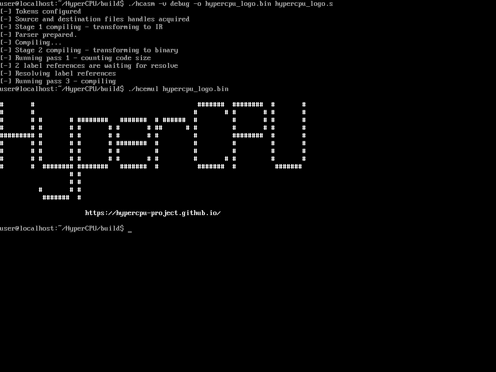

HyperCPU Project
The hyper toolkit for custom hyper ISA.
An experimental project of HyperWin and contributors

The website is in active development and may contain a lot of bugs.
You can help the development by contributing to its GitHub repository.
Install HyperCPU
HyperCPU ISA
HyperCPU ISA and its toolkit (assembler and emulator)
Hyper C Compiler (hcc)
A multi-backend K&R style C compiler with experimental HyperCPU support (as backend)
HyperCPU Project currently does not provide pre-compiled binaries for its tools, but we are working on it.
It is strongly adviced to read README before installing, since it contains many useful and important information about installation process.
Documentation
Read README files in repositories you are interested in.
Frequently Asked Questions
Nobody asked us any questions yet, unfortunately.
Project Links
Team Members
HyperCPU Project Founder, HyperCPU Lead Developer and Documentation Author
Hyper C Compiler (hcc) Lead Developer
HyperCPU Beta Tester, Website Developer, Artist
 Home
Home
 Install
Install
 Documentation
Documentation
 FAQ
FAQ
 Links
Links
 Contribute
Contribute
 Source code
Source code